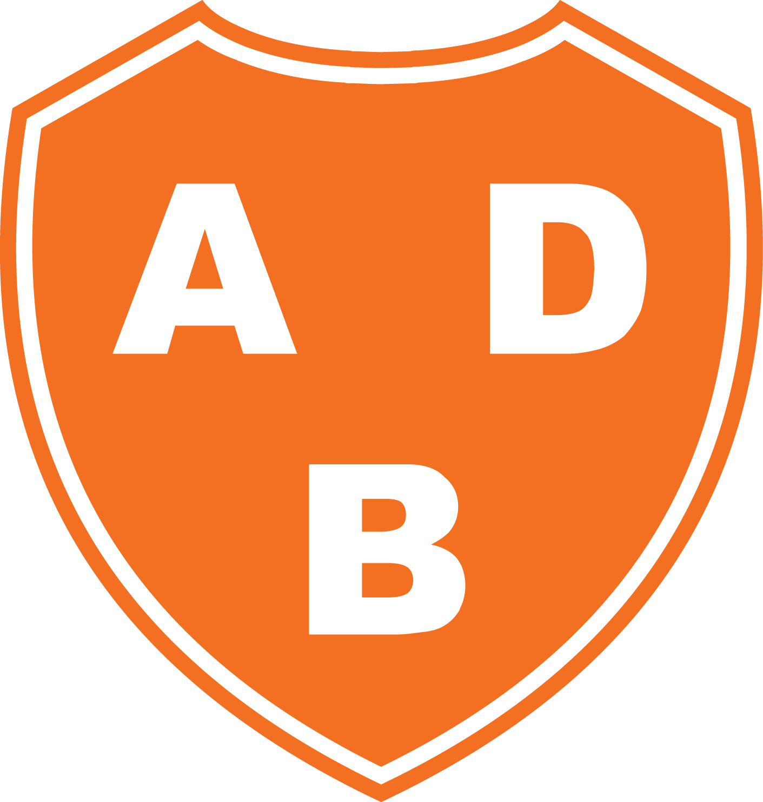
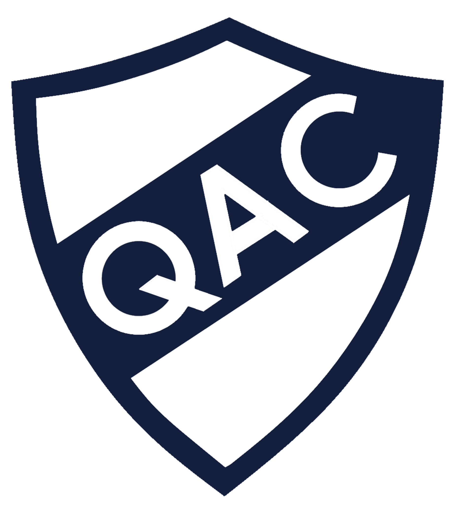
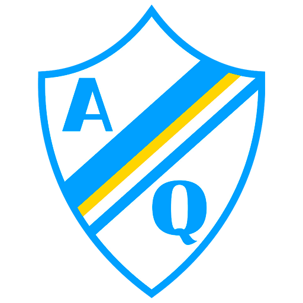
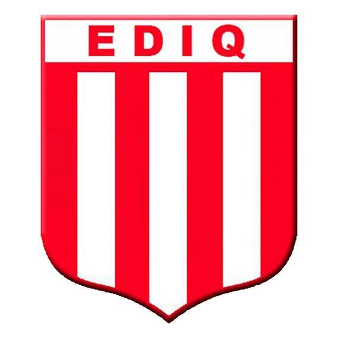

Asociación Deportiva Berazategui

La Asociación Deportiva Berazategui es un club argentino de fútbol fundado el 18 de septiembre de 1975. Tiene sede en el partido de Berazategui, provincia de Buenos Aires. Actualmente participa en la Primera C, cuarta división para los equipos directamente afiliados a la AFA. Su Estadio Norman Lee tiene capacidad para 5500 personas.
DATOS DEL CLUB:
- Temporadas en Primera División: 0
- Temporadas en Primera Nacional: 0
- Temporadas en Primera B: 7
- Temporadas en Primera C: 34
- Temporadas en Primera D: 6
Quilmes Atlético Club

El Quilmes Atlético Club es una institución deportiva argentina, de la ciudad de Quilmes, provincia de Buenos Aires. Sus principales deportes son el fútbol masculino, donde participa en la Primera Nacional, y el hockey sobre césped, siendo el primero de estos el que recibe mayor prioridad.
Promueve la práctica de varios deportes, como el tenis, natación, básquet, gimnasia, patín, artes marciales, vóley. Posee además una escuela de fútbol para los más pequeños.
En su actividad principal, el fútbol, el club ostenta dos títulos de Primera División: uno en la era amateur, obtenido en 1912, y otro en el profesionalismo, el Metropolitano 1978. A su vez, ganó una copa nacional en 1908, la Copa de Honor Municipalidad de la Ciudad de Buenos Aires.
En la Primera División, acumula once ascensos. Con doce descensos en su haber, es el club que más veces perdió la primera categoría en la historia del fútbol argentino; pero también el que más veces ascendió.
Argentino de Quilmes

El Club Atlético Argentino de Quilmes es un club de fútbol argentino fundado el 1 de diciembre de 1899. Su sede se encuentra en la ciudad de Quilmes, ubicada en el partido homónimo perteneciente a la provincia de Buenos Aires. Su estadio es conocido como Barranca Quilmeña y tiene capacidad para 7000 personas. Participa en la Primera B Metropolitana, tercera división para los equipos directamente afiliados a la AFA.
El logro más importante en la historia del club fue el ascenso a la Primera División en 1938, tras salir campeón de la Primera B ganándole la final a su clásico rival Quilmes.
Es uno de los clubes que descendió a la Primera D habiendo llegado a participar de la Primera División, aunque fue el único que jugó en la máxima categoría profesionalmente.
Además del fútbol, también el club tiene práctica de patín, básquet, tenis, paddle y zumba. En su predio posee piletas, quinchos, parrillas, gimnasio, restaurante, salón para eventos y canchas de fútbol sintético. En temporada, también en el club, funciona una colonia para niños.
Escuela Deportiva Infantil Quilmeña

El club EDIQ nació el 30 de marzo de 1995 como semillero de futbolistas y centro de formación integral para jovenes. A lo largo de su rica historia ha formado no solo formidables jugadores sino también, y principalmente, grandes personas. Su arraigo social lo ha hecho sobrevivir aún en los peores momentos institucionales que lo azotaron. EDIQ soportó cambios dirigenciales, bancarrotas financieras, desalojos inmobiliarios y hasta un tornado que destrozó su predio. Siempre se levantó.
Actualmente el club renta un predio en la calle Hacha al 1228 en Quilmes Oeste. Cada domingo cientos de niños y niñas se reunen allí para hacer lo que más les gusta: jugar con amigos. Porque del club no hablan solamente sus vitrinas. Lo que lo hace ser quién es es su legado indeleble en cada futbolista que viste el robo y el blanco alguna vez. Defender la camiseta de EDIQ es defender un estilo de vida. Es irse a dormir temprano para levantarse a jugar al otro día. Es decirle NO a un monton de tentaciones y evitar el placer mundano con tal de conquistar la gloria eterna. Es luchar contra viento y marea. Contra las crisis economicas y sanitarias. Contra la desigualdad y la indeferencia. Contra los obsecuentes y los vanidosos. Es jugar no por el deber de ganar...sino...unicamente...por el placer de JUGAR.